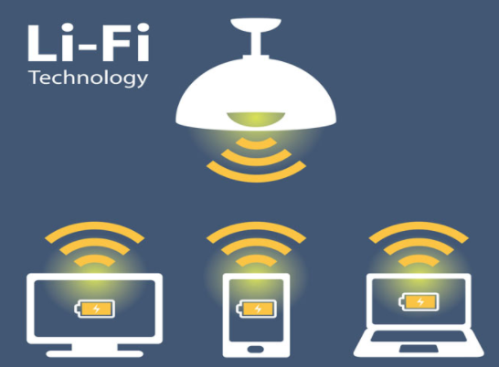

Ahora estamos más cerca de ti, con nuestra página web podrás acceder a nuestros post desde cualquier lugar! Solo ingresa a: developerpe.com en ella encontraras diversas secciones pensadas para ti!
¿Qué es LiFi?
LiFi es una tecnología inalámbrica de doble vía con una alta velocidad que usa ondas de luz para poder transmitir datos de una forma rápida y segura.
Algunas pruebas dieron como resultado que las luminarias de oficina de Philips nos ofrecen una conexión de ancho de banda con una velocidad de 30Mb/s. Según Philips, el LiFi es una tecnología inalámbrica mucho más avanzada que el WiFi debido a qué LiFi puede utilizarse en lugares donde las ondas de radio pueden obstaculizar con otros dispositivos o donde las señales de Wi-Fi son débiles o no logran alcanzar.
A pesar de ser mucho más rápida que el convencional WiFi, logrando velocidades que son hasta 100 veces más rápidas que lo convencional, dos de sus principales desventajas son:
- No tiene mucho alcance, su máximo es de 10 metros.
- su señal se verá interrumpida cuando un objeto se antepone al haz de luz.
Usos
Aunque la tecnología de Li-Fi puede aplicarse a cualquier dispositivo de comunicación,podemos encontrar un gran potencial en los smartphones, tanto dentro como fuera del hogar. Dentro porque permite redes sencillas, potentes y teóricamente baratas que pueden llegar a todos los rincones de una habitación por medio de una bombilla en el techo.
Fuera porque son una estupenda opción para desplegar sistemas de información ad-hoc sin usar WiFi, con información personalizada que llegará directamente a nuestros terminales.
Ya se ha pensado instalar esta nueva tecnología en bibliotecas, museos, estadios deportivos, centros comerciales, entre muchos otros lugares. Claro está que dichos lugares o aparatos donde se deseen colocar deberán llevar o necesitarán instalarse en ellos un sistema de recepción de luz.
El año pasado, Joanne Oh de la Universidad de Eindhoven probó LiFi pero con rayos infrarrojos. En sus pruebas logró una sorprendente cifra de transmisión: conexiones de hasta 42,8 Gbps a una distancia máxima de 2,5 metros
Aquí una demostración hecha por Harald Haas en el 2015.